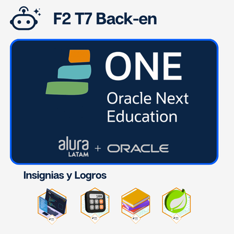

Proyectos Educativos
A lo largo de mi trayectoria profesional he participado y liderado diversos proyectos que han
impulsado la innovación educativa, el desarrollo docente y la colaboración internacional.
Estos trabajos han involucrado a instituciones de alto impacto como la Red Interamericana
de Educación Docente (RIED) de la OEA, el Ministerio de Educación de Guatemala, y
organizaciones académicas en Latinoamérica.
En esta página encontrarás una selección de proyectos desarrollados, talleres coordinados,
ponencias y participaciones en conferencias internacionales, así como iniciativas que se
encuentran en marcha para seguir contribuyendo a la educación y la tecnología.
Logros Destacados


Formación Profesional
A lo largo de mi trayectoria profesional, he consolidado una sólida formación académica respaldada por certificaciones y reconocimientos en diversas áreas de la tecnología y la educación. Cuento con rutas de aprendizaje finalizadas en Microsoft Learn, certificaciones internacionales de Google, programas universitarios en Guatemala y el extranjero, así como membresías en comunidades especializadas como el G7 de Alura Latam y Oracle, con enfoque en desarrollo Backend. Mi preparación también abarca herramientas digitales como Canva y Office 365, siempre orientadas a potenciar la educación, la inteligencia artificial y la innovación tecnológica.
Certificados de Microsoft
He completado múltiples rutas de aprendizaje en Microsoft Learn, obteniendo trofeos y certificaciones que avalan mis conocimientos en tecnologías clave y soluciones de vanguardia.
Expediente completo
Oracle Next Education
He completado siete formaciones con una carga de trabajo estimada de 304 horas, para convertirme en un egresado del Programa Oracle Next Education F2 T7 Back-end de Alura Latam, con un enfoque en desarrollo Back-end y tecnologías emergentes.
Expediente completo
Certificados de Google
He completado multiples formaciónes, sobre las herrramientas digitales de Google, obteniendo certificaciones que avalan mis conocimientos en el uso de estas herramientas para la educación.
IA generativa para educadores
Prácticas Guiadas

Instructor de Diplomado en Principios de Inteligencia Artificial

Universidad Galileo - PEM en Tecnologías de la Información y la Comunicación

Programa Galileo - Profesorado Técnico en Enseñanza de la Matemática para Diversificado